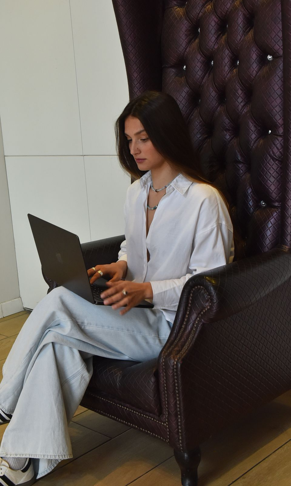

1ביתר עילית · גיל 11
בגיל 11 יצאתי מהבית.
גדלתי בחברה החרדית בביתר עילית. בגיל 11 יצאתי מהבית לפנימיה והתחלתי לחפש מקום שאוכל לקרוא לו בית.
בהרצאה:צמצום פערים ונוער בסיכון
נעים מאוד, שמחה לביא
מרצה ויזמית חברתית | חרדית לשעבר | קצינה לוחמת
מה קורה כשנערה שהוגדרה בסיכון מחליטה שהסיפור שלה לא ייגמר שם?
להזמנת הרצאהמהילדה מביתר עילית, המגזר החרדי ומשמרת הצניעות, דרך פיקוד כקצינה קרבית בצה״ל, הפציעה והשיקום ועד ליזמות עסקית וחברתית בשטח.
״כפעילה לצמצום פערים בחברה הישראלית, אני מחברת היום בין כל העולמות עם מטרה אחת ברורה: לייצר פתרונות מעשיים בשטח, לבנות חוסן ולמגר פשיעה בקרב בני נוער. בדרך הזו גיליתי שהריפוי האמיתי מתחיל בעשייה, אבל הדלק שיניע אותך בכל בוקר מתחיל בזה שפשוט יהיה לך אכפת.״


הסיפור שלי
כל תחנה בדרך היא גם נושא בהרצאה.
״הייתי הילדה שאף מסגרת לא ידעה מה לעשות איתה. היום אני עובדת עם האנשים שמנהלים את המסגרות.״
1ביתר עילית · גיל 11
גדלתי בחברה החרדית בביתר עילית. בגיל 11 יצאתי מהבית לפנימיה והתחלתי לחפש מקום שאוכל לקרוא לו בית.

2נערה בסיכוי
הסיכון לא היה מי שהייתי. הסיכון היה להאמין שזה כל מה שאוכל להיות.
עברתי לא מעט מסגרות ופנימיות ופגשתי מקרוב את המקומות שעד היום אני לא מאמינה שניצלתי מהם. הבנתי שמה שהייתי צריכה זה קרקע יציבה ומבוגר אחד שידרוש ממני.

3הגיוס
לא אשכח את היום בבה״ד 1. שם גם גיליתי את גודל הפער שלי מול החברה הישראלית והבנתי שאין לי ברירה אלא לעשות הכל כדי לצמצם אותו.
4קצינה לוחמת
פיקדתי על לוחמים ולוחמות מכל קצוות החברה.
סיימתי קורס קצינים ויצאתי לפקד מתוך שליחות אחת ברורה: הגנה על מדינת ישראל.

5הפציעה והצדק המאחה
במהלך השירות נפגעתי בתאונת דרכים קשה. בחרתי בהליך גישור וצדק מאחה. נפגשתי עם הפוגע שלי. למדתי שאפשר לקום ממשבר ולא לוותר על מי שעוד יכולתי להיות.

6ONE SHOT
״לכולם יש טיקטוק״
אחרי השחרור ייסדתי את ONE SHOT. עסקתי בשיווק, אבל הלב רצה משמעות, ומשם הובלתי אותו לפלטפורמה שמחברת בין מיזמים חברתיים לקהלים שזקוקים להם.
7יזמות חברתית
״יוצרות מציאות״
לתת לנערות מקצוע ועתיד.
חשבתי על איך לשלב את האסטרטגיה והקריאייטיב למטרות טובות, והקמתי את הפרויקט ״יוצרות מציאות״, שנועד לתת מקצוע לנערות שנשרו מבית הספר, בשיתוף עיריות ומוסדות חינוך.
הרצאה אחת שמחברת בין העולמות
הסיפור אותו סיפור. הדגש משתנה לפי מי שיושב באולם. בחרו את הקהל שלכם:
״מה אם האדם שהכי קשה לכם להבין הוא דווקא האדם שאתם הכי צריכים להקשיב לו?״
המיקוד
מתוך הסיפור: אחדות בעם ישראל · קצינה לוחמת · הפציעה והליך הצדק המאחה
להזמנת ההרצאה לארגוןלארגון שלכם:
המיקוד
״לא נתתי לנקודת הפתיחה להגדיר את נקודת הסיום״
מתוך הסיפור: הנערה מביתר עילית · נערה בסיכוי · עשייה חברתית ו״יוצרות מציאות״
להזמנת ההרצאה לצוות החינוכי״כל המציל נפש אחת בישראל, כאילו הציל עולם ומלואו״
המיקוד
מתוך הסיפור: נערה בסיכוי · ONE SHOT · עשייה חברתית ו״יוצרות מציאות״ · הפציעה והליך הצדק המאחה
להזמנת ההרצאה לרשותההשפעה גדולה יותר כשמזהים אותה:
המיקוד
״הם סימנו לי גבולות. אני הפכתי אותם לנקודות זינוק.״
מתוך הסיפור: ביתר עילית · גיל 11 · הגיוס · נערים בסיכוי
להזמנת ההרצאה לנוערהנוער יודע להקשיב כשמדברים בשפה שלו:
עשייה וצמצום פערים בחברה הישראלית
מהסיפור האישי לפרויקטים שמשנים מסלול לנוער ולנערות, בשיתוף עיריות, מוסדות חינוך וארגונים.
תוכן לשינוי חברתי
מחברים מיזמים חברתיים לקהלים שזקוקים להם.
ליווי אישי
ליווי אישי לנערות, כי מה שמשנה מסלול הוא מבוגר אחד שמאמין בך.
נמצא לך את המסגרת הנכונה.
לרשויות ולמוסדות חינוך
פרויקט ייחודי לנערות שנשרו מבית הספר, בשיתוף עיריות ומוסדות חינוך.
יצירת קשר
הרצאה, מפגש או שיתוף פעולה? ספרו לנו מי הקהל ומה המטרה, ונחזור עם הצעה מותאמת.